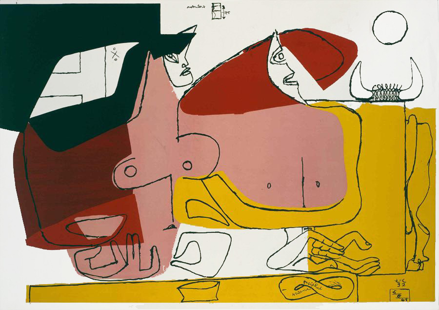
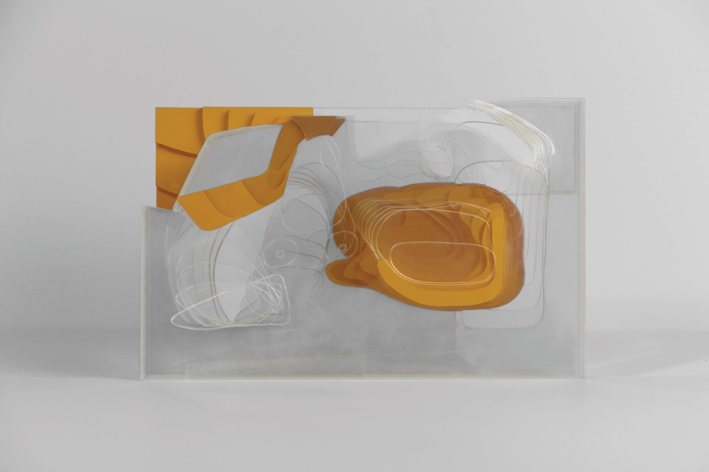
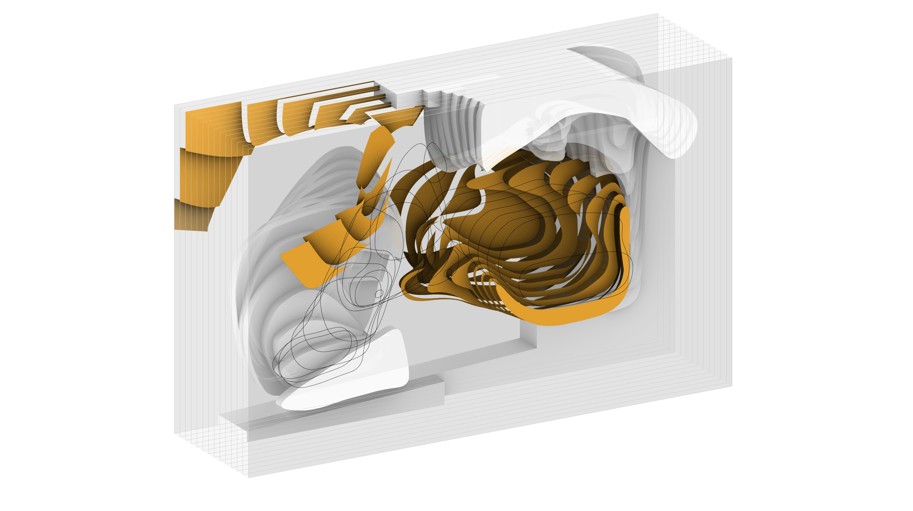
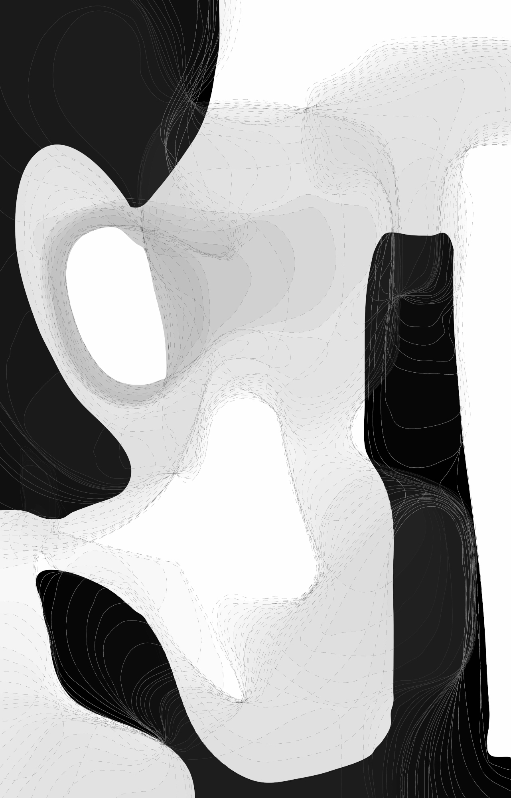
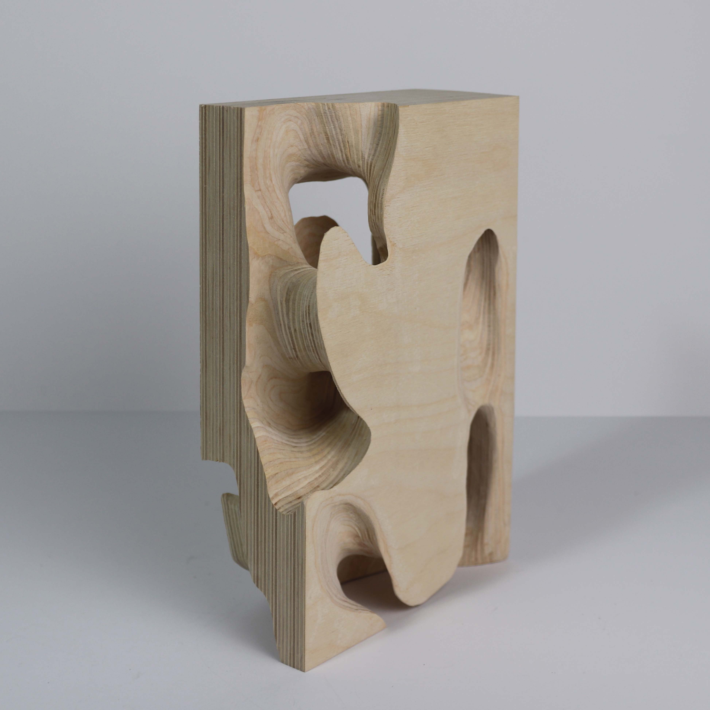

Design Fabrication: From 2D to 3D (2019)
Ariane Et Pasiphae(below) was painted in 1935 by an artist and architect Le Corbusier. It is denoted by simple shapes void of detail and strong colors that imply the subject through composition. Purist paintings, such as this, tend to read as very flat; space is not clearly visible but is rather implied through color and proportion.

The investigation of the painting began with a series of analytical steps in order to break down the composition. Proportion and color were analyzed in order to find the implied spatial qualities of the painting. These served as the baseline for interpreting the spacial qualities that were explored through the following series of models and drawings.



